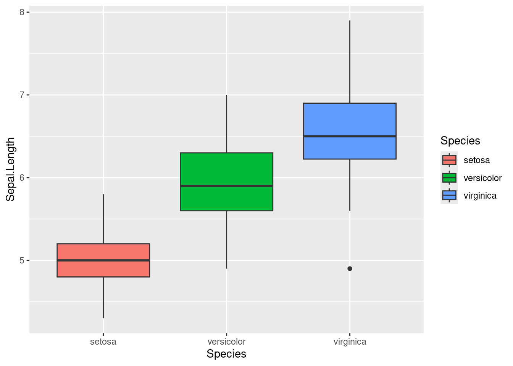
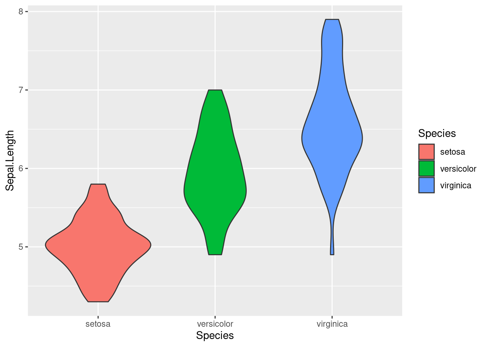
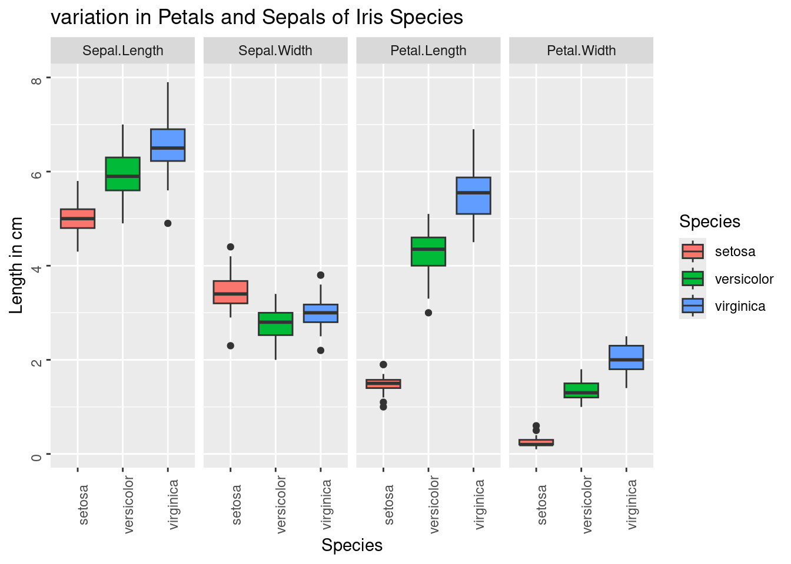
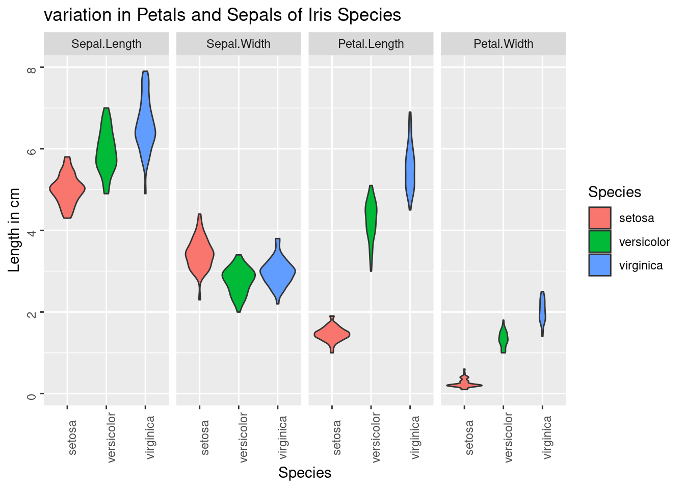

Chapter 11 Working with inbuilt iris data
- plot a box plot to compare the sepal length in diferent iris species
 Virginica have higher sepal length however some virginica have less sepal length than versicolor
Violin plot will show a better distribution than boxplot

- Reshaping the data into long format
Convert to a long format
gather command is used to convert data into fewer columns
#Gather from sepal length to petal width column into type and measurement column
iris_long = gather(iris, type, measurement, Sepal.Length:Petal.Width, factor_key = TRUE)
View(iris_long)Lets plot the data to a boxplot
graph=ggplot(iris_long, aes(x=Species,y=measurement))+
labs(x="Species", y="Length in cm", title = "variation in Petals and Sepals of Iris Species")+
theme(axis.text = element_text(angle=90))+
facet_grid(~type)+
aes(fill=Species)+
geom_boxplot()
print(graph)
the same can also be plotted to a violin plot
graph=ggplot(iris_long, aes(x=Species,y=measurement))+
labs(x="Species", y="Length in cm", title = "variation in Petals and Sepals of Iris Species")+
theme(axis.text = element_text(angle=90))+
facet_grid(~type)+
aes(fill=Species)+
geom_violin()
print(graph)